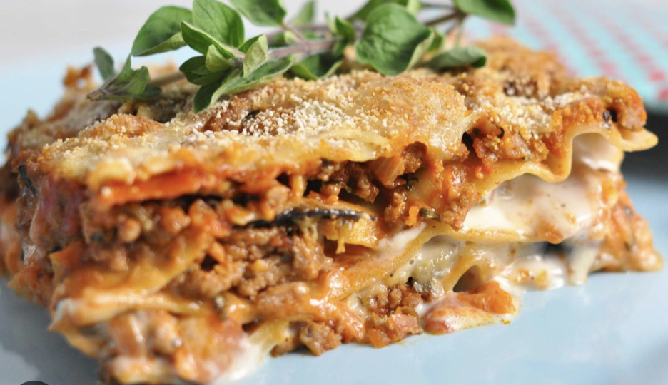

lasagna

Lækker lasange
En lasgne er god til alle lejligheder, om der bare er til familien der hjemme
eller det store selvskab!
Det gode ved lasagne er også at den kan laves i god til og evt fryses, så den hurtigt
kan tages op og blive varmet. Perfekt til den travlt familie
Ingredienser
- 500g oksekød
- 1 ds. bechamelsovs
- 1ds. flåede tomater
- lasagneplader
- 4 tsk. basilikum
Trin for trin
- brun kødet i en tykbundet gryde
- kom tomater og basilikum i gryden
- lad det simre i 30 min (kom eventuelt noget vand ved, hvis kødsovsen bliver for tæt)
- kom skiftevis kødsovs, bechamelsovs og lasagneplader i et fad
- bag i ovnen i ca. 40 minutter